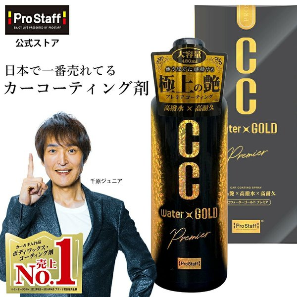
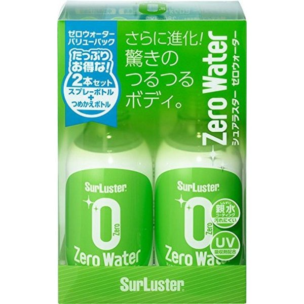
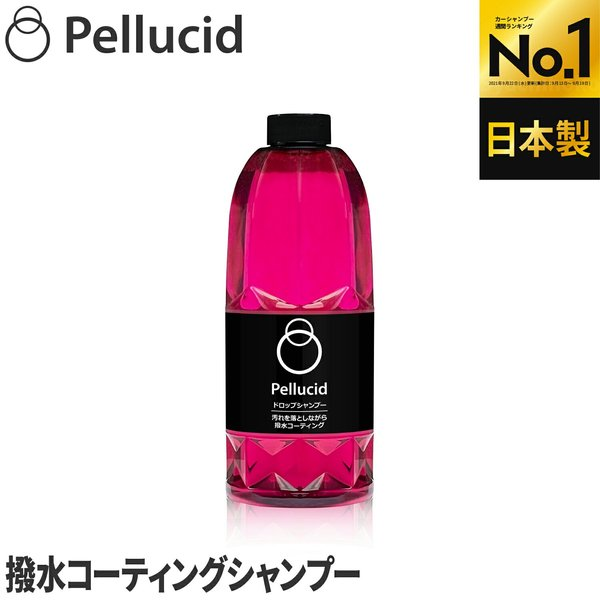
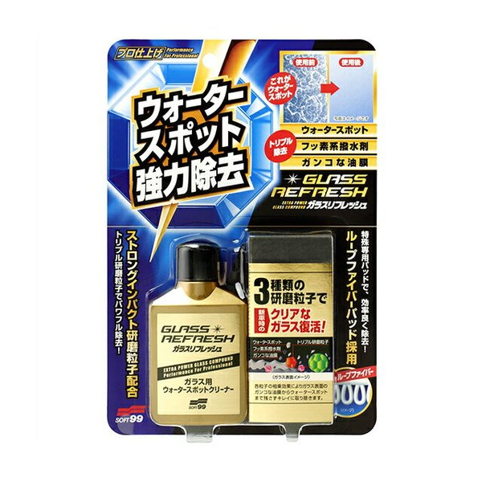
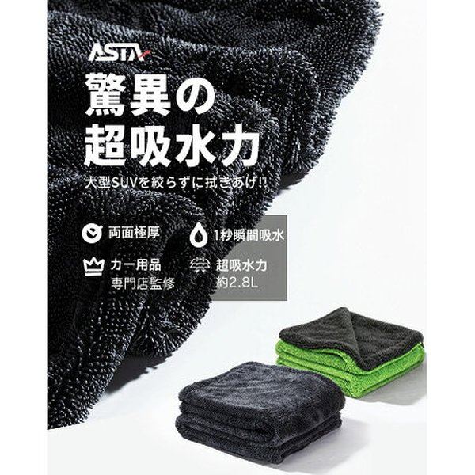
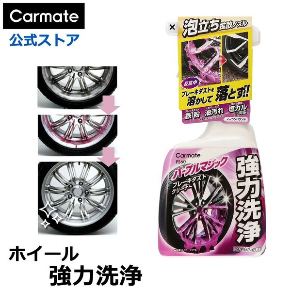
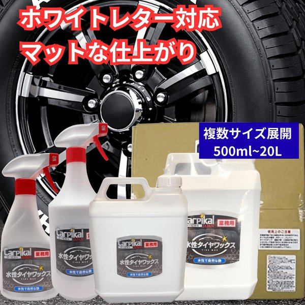
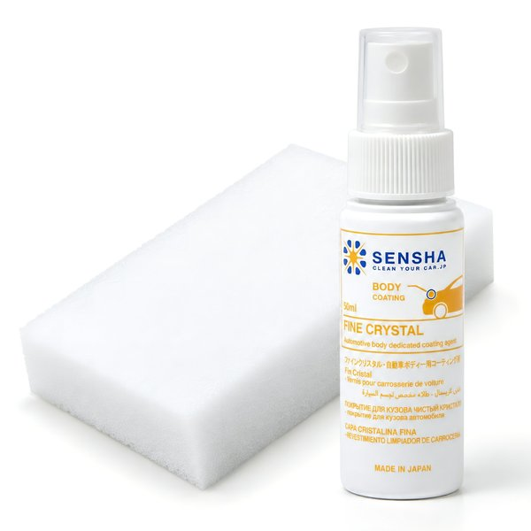
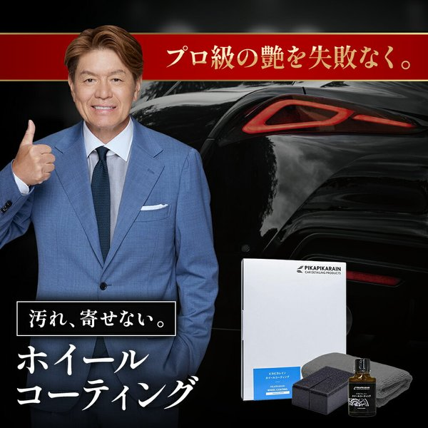
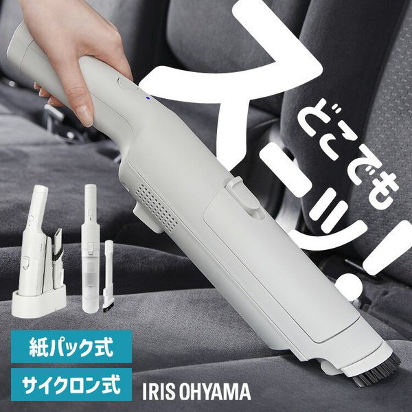

【2026年・年末の愛車洗車】ボディコーティング・洗車シャンプー・拭き上げタオル・ホイール＆車内クリーナー10選｜プロスタッフ・シュアラスター・ソフト99・カーメイトを実売価格で比較
年末の洗車は、汚れを落とすだけで終わらせると、年明けにすぐ汚れが戻ります。ボディの被膜、ガラスの水アカ、ホイールのブレーキダスト、車内の砂。この4か所を1回で片づけると、次の洗車までの間がぐっとラクになります。
選ぶ軸は3つです。「まずボディの被膜」。洗車のたびにスプレーして拭くタイプか、1台分を塗り込むタイプかで、手間と持ちが変わります。「次にガラスとホイール」。フロントガラスの水アカはコーティングの前に落とすと、その後の撥水が長持ちします。ホイールは専用のクリーナーとコート剤を1本ずつ。「最後に車内」。コードレスのハンディクリーナーがあると、洗車のついでに車内まで一回りできます。
本記事では、楽天市場で人気・高評価の年末洗車・コーティング用品10選を、実売価格とレビュー評価つきで写真付き紹介します。
- おすすめ10選 スペック・特徴比較表
- BEST 1｜CCウォーターゴールド プレミア つけかえ用 480ml
- BEST 2｜ゼロウォーター バリューパック 280ml×2本
- BEST 3｜撥水カーシャンプー PCD-100 ドロップシャンプー
- BEST 4｜ガラスリフレッシュ 05066
- BEST 5｜洗車タオル 超吸水 大判
- BEST 6｜PS60 ブレーキダストクリーナー マグナショット
- BEST 7｜水性タイヤワックス 業務用 500ml〜20L
- BEST 8｜ガラスコーティング剤 ファインクリスタル 50ml
- BEST 9｜アルミホイールコーティング 10ml
- BEST 10｜ハンディクリーナー HCD-23／HBD-31
- 【読者負担0円】買わなくても得する無料サービス
- まとめ：年末の洗車とコーティング10選の選び方
| 順位 | 商品名 | ブランド | 最大の特徴・おすすめ理由 | 総合評価 |
|---|---|---|---|---|
| BEST 1 | CCウォーターゴールド プレミア つけかえ用 480ml | プロスタッフ（Prostaff） | スプレーして拭くだけの手軽さ | 4.69 |
| BEST 2 | ゼロウォーター バリューパック 280ml×2本 | シュアラスター | 濡れたボディにそのまま使える | 4.21 |
| BEST 3 | 撥水カーシャンプー PCD-100 ドロップシャンプー | ペルシード（Pellucid） | 洗うだけでコーティング効果が続く | 4.43 |
| BEST 4 | ガラスリフレッシュ 05066 | ソフト99（SOFT99） | 水アカと油膜を同時に落とせる | 4.41 |
| BEST 5 | 洗車タオル 超吸水 大判 | ASTA | 大判で水滴を一気に拭き取れる | 4.70 |
| BEST 6 | PS60 ブレーキダストクリーナー マグナショット | カーメイト（CARMATE） | 泡が汚れに留まり溶かして落とす | 4.18 |
| BEST 7 | 水性タイヤワックス 業務用 500ml〜20L | カーピカル | ホワイトレターにも使える | 4.63 |
| BEST 8 | ガラスコーティング剤 ファインクリスタル 50ml | SENSHA（ファインクリスタル） | 1台分から試せる50ml | 4.34 |
| BEST 9 | アルミホイールコーティング 10ml | ピカピカレイン | ホイール4本分に塗れる10ml | 4.60 |
| BEST 10 | ハンディクリーナー HCD-23／HBD-31 | アイリスオーヤマ | 置くだけで充電できる | 4.43 |
CCウォーターゴールド プレミア つけかえ用 480ml

プロスタッフのCCウォーターゴールド プレミアは、洗車のあとにスプレーして拭き上げるだけでガラス系の被膜が付くコーティング剤です。480mlの大容量つけかえ用で、手持ちのスプレーボトルに継ぎ足して使います。プレミアは標準タイプより被膜の持ちが長く、艶と撥水のバランスがいい仕上がりになります。洗車のたびに使うものなので、詰め替えでコストを抑えられるのが実用的です。楽天市場での実売価格は約3,980円（2026年11月時点）。
- スプレーして拭くだけの手軽さ
- 大容量つけかえでコストを抑えられる
- 艶と撥水のバランスがいい
- つけかえ用なので、スプレーボトルは別に用意する
ゼロウォーター バリューパック 280ml×2本

シュアラスターのゼロウォーターは、水をはじく撥水ではなく、薄い膜で水を流す親水タイプのガラス系コーティング剤です。撥水コーティングで起きやすい白いシミ（イオンデポジット）が付きにくいのが特徴。280mlが2本入りで、中型車なら十数台分使えます。洗車後の濡れたボディにスプレーして拭き上げるだけで、艶が出て汚れも落ちやすくなります。楽天市場での実売価格は約3,278円（2026年11月時点）。
- 濡れたボディにそのまま使える
- 親水タイプで水シミが付きにくい
- 2本入りで長く使える
- レビューは24件と少なく、水を弾く撥水を求める人には物足りない
撥水カーシャンプー PCD-100 ドロップシャンプー

ペルシードのドロップシャンプーは、洗うだけでコーティング効果が約2か月続く濃縮タイプのカーシャンプーです。中性でノーコンパウンドなので、コーティング施工車の被膜を落とさずに汚れだけを浮かせられます。濃縮タイプで、バケツ洗車にもフォームガンにも使えます。洗車のたびにワックスを塗る時間が取れない人に向いています。楽天市場での実売価格は約1,380円（2026年11月時点）。
- 洗うだけでコーティング効果が続く
- 中性でコーティング車にも使える
- 濃縮タイプで長くもつ
- もこもこの泡を楽しむなら、専用のフォームガンを用意する
ガラスリフレッシュ 05066

ソフト99のガラスリフレッシュは、フロントガラスや窓にこびりついたウォータースポット（水アカ）と油膜を削り落とす研磨タイプのクリーナーです。3種類の研磨粒子と専用のループパッドがセットになっていて、ワイパーで拭いても取れない白い輪ジミをこすって落とせます。撥水コーティングの前にこれで下地を整えると、コーティングが長持ちします。楽天市場での実売価格は約1,180円（2026年11月時点）。
- 水アカと油膜を同時に落とせる
- 専用パッド付きですぐ使える
- コーティング前の下地づくりに
- レビューは39件と少なく、研磨剤なので力を入れすぎると傷の原因になる
洗車タオル 超吸水 大判

ASTAの洗車タオルは、大判サイズのマイクロファイバーで、洗車後の水滴を一拭きで吸い取る拭き上げ用タオルです。水分を抱え込むので何度も往復させずに済み、拭きムラや乾き跡が残りにくいのが利点。両面使えて、コーティング施工車の表面でも傷が付きにくい肌触りです。1枚から複数枚セットまで選べるので、外回り用と室内用に分けて使えます。楽天市場での実売価格は約1,980円（2026年11月時点）。
- 大判で水滴を一気に拭き取れる
- 両面使えて傷が付きにくい
- 複数枚セットから選べる
- 使う前に砂やゴミを払っておかないと、そのまま傷になる
PS60 ブレーキダストクリーナー マグナショット

カーメイトのPS60は、アルミホイールにこびりついたブレーキダストを溶かして落とすスプレー式のクリーナーです。泡状に出て汚れに留まり、反応すると紫色に変わるので洗い残しが分かりやすいのが特徴。ホイールの内側やスポークの隙間まで届き、ブラシでこすらずに汚れを浮かせられます。洗車のたびに使うと、ホイールの黒ずみが積み重なりません。楽天市場での実売価格は約1,001円（2026年11月時点）。
- 泡が汚れに留まり溶かして落とす
- 変色で反応が分かる
- ブラシでこすらず使える
- アルミ向けの薬剤なので、塗装ホイールは目立たない場所で試してから
水性タイヤワックス 業務用 500ml〜20L

カーピカルは業務用の水性タイヤワックスで、タイヤの黒さを戻しながら保護する塗り込みタイプです。ホワイトレターにも使える処方で、仕上がりはマット。テカテカせず、新品タイヤのような自然な黒が出ます。容量は500mLから20Lまで選べ、洗車用品店や整備の現場でも使われるタイプです。塗って乾かすだけなので、タイヤのひび割れ防止も兼ねられます。楽天市場での実売価格は約1,980円（2026年11月時点）。
- ホワイトレターにも使える
- マットで自然な黒に仕上がる
- 容量を選べる業務用タイプ
- 塗りすぎると乾くのに時間がかかり、ホコリが付きやすい
ガラスコーティング剤 ファインクリスタル 50ml

SENSHAのファインクリスタルは、1液タイプのガラス系コーティング剤です。50mlの少量タイプで、まず1台分を試せる容量から始められます。塗り込んで拭き上げるだけで被膜ができ、ボディの艶と撥水が同時に付くのが特徴。スプレー剤より被膜が持ちやすく、洗車の回数を減らしたい人に向いています。初めての本格コーティングの1本として選びやすい大きさです。楽天市場での実売価格は約1,000円（2026年11月時点）。
- 1台分から試せる50ml
- 1液タイプで施工が簡単
- スプレー剤より被膜が持ちやすい
- 施工前に脱脂と乾燥が必要で、30分ほど時間をとる
アルミホイールコーティング 10ml

ピカピカレインのホイールコーティングは、ホイール専用のガラス系コーティング剤です。10mlの少量で、4本分のホイールに塗れます。耐熱性があり、走行後の熱いホイールでも被膜が傷みにくく、ブレーキダストが付きにくくなるのが狙い。施工しておくと、次の洗車でホイールの汚れがスルッと落ちます。ホイールの黒ずみが落ちにくくなってきたタイミングで使いたい一本です。楽天市場での実売価格は約2,980円（2026年11月時点）。
- ホイール4本分に塗れる10ml
- 耐熱でブレーキダストに強い
- 次回の洗車がラクになる
- 塗る前にホイールを完全に洗って乾かす必要がある
ハンディクリーナー HCD-23／HBD-31

アイリスオーヤマのハンディクリーナーは、車内用として使いやすいコードレス掃除機です。紙パック式とサイクロン式から選べ、置くだけで充電できるスタンドが付属します。Type-C充電に対応し、シートの隙間や足元の砂、子どもが落とした食べかすをさっと吸えます。本体が軽く片手で持てるので、洗車のついでに車内を一回りする流れが作りやすい一台です。楽天市場での実売価格は約7,280円（2026年11月時点）。
- 置くだけで充電できる
- 紙パック式とサイクロン式を選べる
- 軽くて片手で使える
- 車内の砂やホコリ向けで、床の本格的な掃除にはパワーが足りない
この記事の商品を買う前に、まずは無料で得する選択肢をチェック。どれも登録・利用は0円で、無料期間中に解約すれば料金はかかりません。読みたい雑誌がある人、ポイントを貯めたい人、アンケートなら気軽という人、それぞれに合うものを選べます。
初回31日無料・無料期間中に解約すれば0円 → 楽天ポイントモール｜登録無料で毎日ポイ活
買い物なしでもポイントが貯まる無料サービス → 楽天インサイト｜アンケートに答えてポイント
登録無料・すきま時間のアンケートで貯まる → 楽天カード｜年会費永年無料
新規発行・年会費ずっと0円 →
4つのサービスの違いと使い分けは「出費0円で得する！買わずにポイントが貯まる無料サービス厳選4選」でまとめています。
💡 まとめ：年末の洗車とコーティング10選の選び方
年末の洗車は、ボディ・ガラス・ホイール・車内の4ブロックで道具をそろえると、買い足しの重複がありません。ボディは、洗車のたびに使えるプロスタッフのCCウォーターゴールド プレミアを軸に、水シミを避けたいならシュアラスターのゼロウォーター、がっつり被膜を作るならSENSHAのファインクリスタルを選びます。洗うときはペルシードのドロップシャンプーで、コーティングを落とさずに汚れだけを浮かせます。ガラスはソフト99のガラスリフレッシュで水アカを落としてから、コーティングを重ねる順番。ホイールはカーメイトのPS60で汚れを溶かし、ピカピカレインでコート、タイヤはカーピカルの水性ワックスで仕上げます。拭き上げはASTAの大判タオル、車内はアイリスオーヤマのハンディクリーナー。この10品で、年末の洗車は半日で終わります。
楽天市場では「5と0のつく日」や「お買い物マラソン」などのキャンペーンに合わせて購入すると、ポイント還元が最大化してお得に手に入ります。ぜひチェックしてみてくださいね。